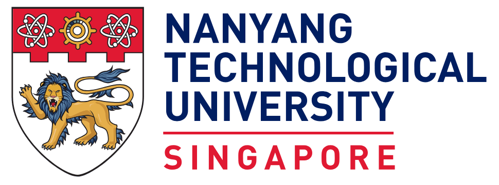
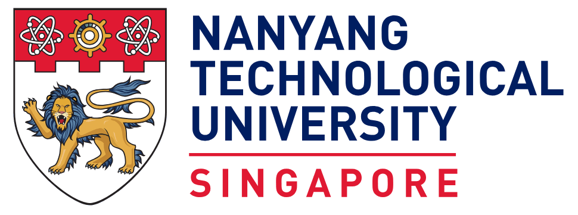

Oral & Poster Papers
Oral papers are for 12 minutes plus 3 minutes for immediate questions. Poster boards can accommodate (1m x 1m) sized posters, in either portrait or landscape. We split all the posters into Poster session 1 and Poster session 2, divided as follows, with each containing 20 poster boards.
| Paper session 1 |
[1] Zhiyuan Hu, Chumin Liu, Xidong Feng, Yilun Zhao, See-Kiong Ng, Anh Tuan Luu, Junxian He, Pang Wei Koh, Bryan Hooi. Uncertainty of Thoughts: Uncertainty-Aware Planning Enhances Information Seeking in Large Language Models. NeurIPS (Slot: 11:45 - 12:00) |
| Paper session 2 |
[1] Ming Shan Hee, Aditi Kumaresan, Roy Ka-Wei Lee. Bridging Modalities: Enhancing Cross-Modality Hate Speech Detection with Few-Shot In-Context Learning. EMNLP main (Slot: 15:45 - 16:00) |
| Paper session 3 |
[1] Yew Ken Chia, Guizhen Chen, Weiwen Xu, Luu Anh Tuan, Soujanya Poria, Lidong Bing. Reasoning Paths Optimization: Learning to Reason and Explore From Diverse Paths. EMNLP main (Slot: 17:00-17:15) |
| Poster session 1 |
[1] Yikang Pan, Liangming Pan, Wenhu Chen, Preslav Nakov, Min-Yen Kan. On the Risk of Misinformation Pollution with Large Language Models (Board: P101) |
| Poster session 2 |
[1] Xuan Long Do, Bowei Zou, Shafiq Joty, Anh Tai Tran, Liangming Pan, Nancy F. Chen, Ai Ti Aw. Modeling What-to-ask and How-to-ask for Answer unaware Conversational Question Generation (Board: P201) |
Keynote Speakers
The following speakers from both academia and industry are invited to give keynotes at SSNLP 2024. Please click the profile image to view the detailed description of the talk.

Speaker: Jason Wei @ OpenAI
Abstract: In this talk I will tell you about the role of scaling in the past five years of artificial intelligence. In the first scaling paradigm, which started around five years ago, our field scaled large language models by training with more compute on more data. Such scaling led to the success of ChatGPT and other AI chat engines, which were surprisingly capable and general purpose. With the release of OpenAI o1, we are at the beginning of a new paradigm where we do not just scale training time compute, but we also scale test-time compute. These new models are trained via reinforcement learning on chain-of-thought reasoning, and by thinking harder for more-challenging tasks can solve even competition-level math and programming problems.
Bio: Dr. Jason Wei is an AI researcher based in San Francisco. He currently works at OpenAI, where he contributed to OpenAI o1, a frontier model trained to do chain-of-thought reasoning via reinforcement learning. From 2020 to 2023, Jason was a research scientist at Google Brain, where his work popularized chain-of-thought prompting, instruction tuning, and emergent phenomena.
Speaker: Bing Liu @ UIC
Abstract: Dialogue systems, commonly known as chatbots, have gained escalating popularity in recent times due to their wide-spread applications in carrying out chit-chat conversations with users and task-oriented dialogues to accomplish various user tasks. Existing chatbots are usually trained from pre-collected and manually labeled data. Many also use manually compiled knowledge bases (KBs). Their ability to understand natural language is still limited. Typically, they need to be constantly improved by engineers with more labeled data and more manually compiled knowledge. In this talk, I would like to introduce the new paradigm of lifelong learning dialogue systems to endow chatbots the ability to learn continually by themselves through their own self-initiated interactions with their users and working environments. As the systems chat more and more with users, they become more and more knowledgeable and better and better at conversing.
Bio: Dr. Bing Liu is a Distinguished Professor and Peter L. and Deborah K. Wexler Professor of Computing at the University of Illinois Chicago. He received his Ph.D. in Artificial Intelligence (AI) from the University of Edinburgh. His current research interests include continual/lifelong learning, lifelong learning dialogue systems, sentiment analysis, machine learning and natural language processing. He has published extensively in prestigious conferences and journals and authored five books: one about lifelong machine learning, one about lifelong learning dialogue systems, two about sentiment analysis, and one about Web mining. Three of his papers have received the Test-of-Time awards, and another one received Test-of-Time honorable mention. Some of his works have also been widely reported in popular and technology press internationally. He served as the Chair of ACM SIGKDD from 2013-2017 and as program chair of many leading data mining conferences. He is also the winner of 2018 ACM SIGKDD Innovation Award, and is a Fellow of ACM, AAAI, and IEEE.
Speaker: Yue Zhang @ Westlake Unv
Abstract: This talk introduces AutoSurvey, a speedy and well-organized methodology for automating the creation of comprehensive literature surveys in rapidly evolving fields like artificial intelligence. Traditional survey paper creation faces challenges due to the vast volume and complexity of information, prompting the need for efficient survey methods. While large language models (LLMs) offer promise in automating this process, challenges such as context window limitations, parametric knowledge constraints, and the lack of evaluation benchmarks remain. AutoSurvey addresses these challenges through a systematic approach that involves initial retrieval and outline generation, subsection drafting by specialized LLMs, integration and refinement, and rigorous evaluation and iteration. Our contributions include a comprehensive solution to the survey problem, a reliable evaluation method, and experimental validation demonstrating AutoSurvey's effectiveness.
Bio: Dr. Yue Zhang is a tenured Professor at Westlake University. His research interests include NLP and its underlying machine learning algorithms. His major contributions to the field include psycholinguistically motivated machine learning algorithm, learning-guided beam search for structured prediction, pioneering neural NLP models including graph LSTM, and OOD generalization for NLP. He authored the Cambridge University Press book ``Natural Language Processing -- a Machine Learning Perspective''. He is the PC co-chair for CCL 2020 and EMNLP 2022, and action editor for Transactions for ACL. He also served as associate editor for IEEE/ACM Transactions of Audio Speech and Language Processing (TASLP), ACM Transactions on Asian and Low-Resource Languages (TALLIP), IEEE Transactions on Big Data (TBD) and Computer, Speech and Language (CSL). He won the best paper awards of IALP 2017 and COLING 2018, best paper honorable mention of SemEval 2020, and best paper nomination for ACL 2018 and ACL 2023.
Speaker: Tianyu Pang @ Sea AI
Abstract: In this talk, I will present our recent works on jailbreaking/cheating LLMs and multimodal LLMs (MLLMs). This involves a quick overview of adversarial attacks and shows how LLMs/MLLMs facilitate much more flexible attacking strategies. For examples, we show that a null model that always returns a constant output can achieve a 86.5% LC win rate on AlpacaEval 2.0; we could also jailbreak one million MLLM agents exponentially fast in, say, 5 minutes.
Bio: Dr. Tianyu Pang is a Senior Research Scientist at Sea AI Lab. He received Ph.D. and B.S. degrees from Tsinghua University. His research interests span the areas of machine learning, including Trustworthy AI and Generative Models. He has published over 40 papers on top-tier conferences and journals including ICML/NeurIPS/ICLR and CVPR/ICCV/ECCV/TPAMI. His published papers have received over 9,000 citations. He is a recipient of Microsoft Research Asia Fellowship (2020), Baidu Scholarship (2020), NVIDIA Pioneering Research Award (2018), Zhong Shimo Scholarship (2020), CAAI Outstanding Doctoral Dissertation Award (2023), WAIC Rising Star Award (2023), and World's Top 2% Scientists (2024).
Speaker: Wenxuan Zhang @ DAMO
Abstract: As large language models (LLMs) rapidly evolve, the challenge of evaluating their capabilities becomes increasingly crucial. In this talk, I will discuss the paradigm shift in LLM evaluation, tracing its evolution from traditional static benchmark-based methods to the LLM-as-a-judge approach, and ultimately to the renowned Chatbot Arena platform based on human voting. Throughout this journey, we observe a trend towards automation in various components of the evaluation process. Building on this trend, I will introduce our innovative solution: the Auto-Arena for LLMs. This automated evaluation framework leverages LLM-based agents to streamline the entire assessment process, from generating questions and participating in debates to evaluating one another within a committee. Remarkably, the Auto-Arena produces results that exhibit state-of-the-art correlation with human preferences—all without human intervention. I will conclude by sharing interesting findings from this project and exploring potential future directions in the realm of automated LLM evaluation and LLM improvements.
Bio: Dr. Wenxuan Zhang is currently a research scientist at Alibaba DAMO Academy in Singapore. He received his Ph.D. degree from the Chinese University of Hong Kong and then joined Alibaba Singapore with the Ali Star award. His primary research areas are natural language processing (NLP) and trustworthy AI. His research aims to advance NLP models that are inclusive, supporting diverse languages and cultures through multilingual language models, while also trustworthy by improving the safety and robustness of the models. He has published over 40 papers in top-tier AI conferences and journals, including ICLR, NeurIPS, ACL, EMNLP, SIGIR, WWW, TOIS, and TKDE. He is the core tech lead of the SeaLLMs project (LLMs specialized for Southeast Asian languages), which has received significant community attention with over 200k downloads. He also regularly serves on the (senior) program committees of multiple leading conferences and journals.
Speaker: Taifeng Wang @ ByteDance
Abstract: In the rapidly evolving field of artificial intelligence, training large-scale language models has emerged as a crucial area of research and development. Today's talk focuses on the significance of training large scale language models with high-quality data. As language models continue to grow in size and complexity, the quality of the training data becomes paramount. High-quality data ensures more accurate and reliable language understanding and generation. It enables the model to capture nuanced language patterns, semantic relationships, and context. We will talk about the various techniques employed to train large-scale language models effectively.
Bio: Taifeng Wang is currently a principal researcher at ByteDance. He got his master's degree from the University of Science and Technology of China. He is an expert on AI Algorithms with over 20 years of R&D experience, who has served as Principal Researcher at Microsoft Research Asia, AI Director of the Intelligent Engine Department at Ant Financial, and Head of AI Algorithms at Biomap. His research spans the entire spectrum from natural language processing (NLP), graph learning, distributed machine learning, multimodal learning, and AI-driven biopharmaceuticals. He has served as a Senior Area Chair for ACL and is the brilliant mind behind LightGBM, famously known as a "Kaggle leaderboard weapon". Holding 17 Chinese patents and 20 U.S. patents, Taifeng's research has garnered over 16,000 citations on Google Scholar. His team is now working on building the Large Language foundation model for ByteDance.
Organizers
 



| General Chair: |
Jiaying Wu, National University of Singapore |
| Local Chairs: |
Ambuj Mehrish, Singapore University of Technology and Design Ming Shan Hee, Singapore University of Technology and Design Gerard Christopher Yeo, National University of Singapore |
| Program & Invitation Chairs: |
Yang Deng, Singapore Management University Anh Tuan Luu, Nanyang Technological University |
| Industry Relations Chair: |
Yixin Cao, Fudan University |
| Publicity Chairs: |
Wenya Wang, Nanyang Technological University Hao Fei, National University of Singapore |
| Advisory Committee: |
Min-Yen Kan, National University of Singapore Soujanya Poria, Singapore University of Technology and Design Roy Lee, Singapore University of Technology and Design |

{kind=link}
{kind=link}
{kind=link}
Location
SSNLP 2024 will be held at the Mapletree Business City, Town Hall Auditorium, (10 Pasir Panjang Road, Singapore 117438.
Past SSNLP
- · SSNLP 2023. Held at NUS.
- · SSNLP 2022. Held at NUS.
- · SSNLP 2020. Held 100% virtually.
- · SSNLP 2019. Held at I2R.
- · SSNLP 2018. Inaugural event at SUTD.
Contact Us
Please feel free to reach out if you have any inquiries: Ambuj Mehrish, Ming Shan Hee and Gerard Christopher Yeo.